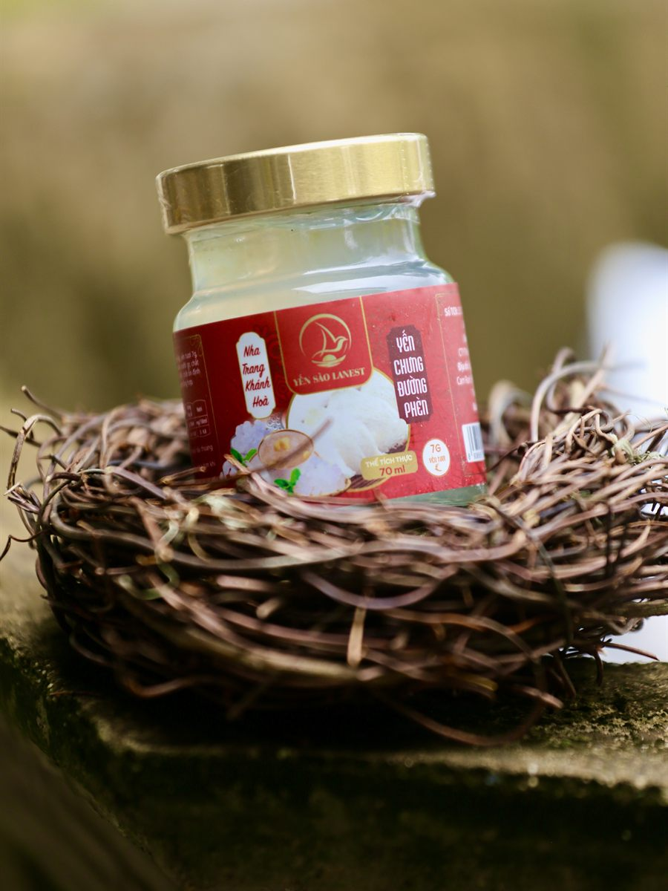
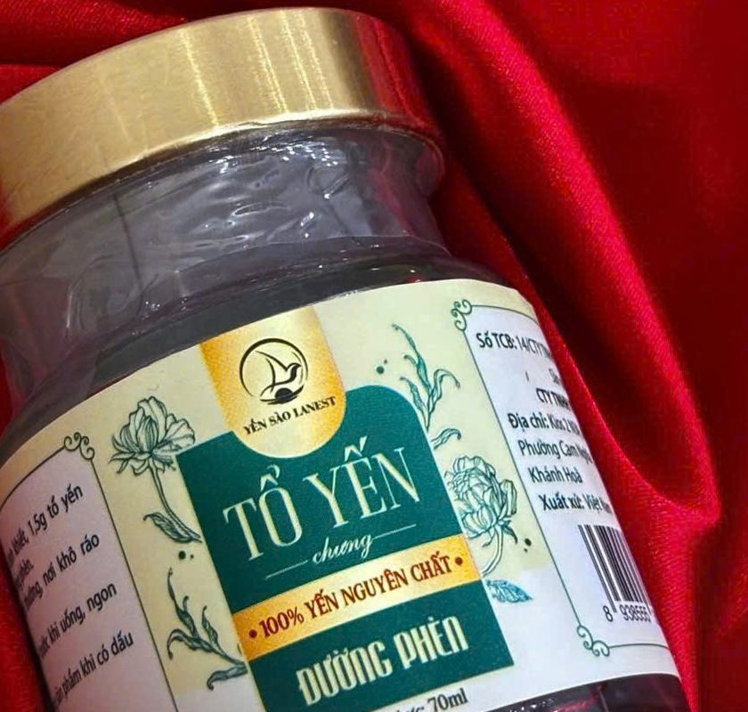

Yến Chưng Đường Phèn: Cách Làm Tại Nhà, Vì Sao Là Vị Kinh Điển Và Chọn Hũ Nào
Yến Sào Lanest · Đăng ngày 29/10/2026

Trong mười mấy vị yến chưng, yến chưng đường phèn là vị mà người làm nghề hay khuyên chọn đầu tiên: ít nguyên liệu, dễ nấu, giữ được vị yến rõ nhất. Bài này hướng dẫn cách chưng yến đường phèn tại nhà theo đúng các bước Lanest đang hướng dẫn khách, giải thích vì sao đây là vị kinh điển, và giới thiệu hai lựa chọn yến hũ vị đường phèn cho ngày bận rộn.
Hũ yến chưng đường phèn 70ml, dòng 7g yến tươi của Lanest
1. Vì sao đường phèn là vị yến kinh điển?
Nhìn vào các hướng dẫn chưng yến của Lanest, từ cẩm nang chưng yến cơ bản đến công thức yến chưng táo đỏ, đường phèn luôn là thứ được cho vào cuối cùng. Có ba lý do:
- Giữ vị yến nguyên bản. Danh mục sản phẩm của Lanest ghi vị đường phèn là "vị nguyên bản". Không có táo đỏ, long nhãn hay gừng chen vào, người uống nếm được mùi và độ sợi của yến rõ nhất.
- Ngọt nhẹ, dễ uống. Tài liệu giới thiệu sản phẩm của Lanest mô tả đường phèn cho vị ngọt nhẹ, dễ chịu, không gắt như đường tinh luyện, và vốn thường được dùng trong các món chưng.
- Là nền cho hầu hết các vị khác. Trong dòng yến hũ 7g của Lanest, các vị như táo đỏ, hạt sen, long nhãn, đông trùng hạ thảo, nhân sâm, gừng đều dùng đường phèn làm vị ngọt nền. Chỉ hai vị ăn kiêng thay bằng đường isomalt.
Vì vậy, người mới uống yến lần đầu, hoặc chưa biết chọn vị nào, cứ bắt đầu từ đường phèn. Quen vị rồi mới thử thêm nguyên liệu khác.
2. Chuẩn bị nguyên liệu và dụng cụ
Lượng dưới đây lấy theo công thức yến chưng của Lanest, đủ cho một người dùng một lần:
| Nguyên liệu | Lượng | Ghi chú |
| Tổ yến tinh chế | Khoảng 5g (khô) | Người lớn mỗi lần 5–10g |
| Nước tinh khiết | Khoảng 200ml | Vừa ngập yến, không đổ quá đầy |
| Đường phèn | 1–2 muỗng | Tăng giảm theo khẩu vị |
| Gừng thái lát (tùy thích) | Vài lát | Giúp khử mùi tanh |
Dụng cụ: thố sứ hoặc hũ thủy tinh chịu nhiệt có nắp, và một nồi đủ sâu để chưng cách thủy. Thố sứ, hũ thủy tinh giữ nhiệt tốt và không phản ứng với thực phẩm.
3. Cách chưng yến đường phèn từng bước
- Ngâm yến bằng nước lạnh khoảng 30–40 phút với yến tinh chế sợi, tới khi yến nở đều và mềm. Không dùng nước ấm hay nước nóng. Yến vụn nở nhanh hơn, chân yến cần lâu hơn.
- Cho yến vào thố, thêm vài lát gừng nếu thích, đổ nước vừa ngập yến.
- Đậy nắp, chưng cách thủy lửa nhỏ khoảng 20–30 phút. Tránh đun sôi trực tiếp. Yến chín khi nước có bọt tăm nhẹ và sợi yến nổi lên trên.
- Cho đường phèn khoảng 5 phút trước khi tắt bếp, khuấy nhẹ cho tan. Hoặc nấu nước đường phèn riêng rồi rót vào sau khi yến chín.
Cẩm nang tổng quan của Lanest ghi mốc ngắn hơn: ngâm 15–30 phút, chưng 15–20 phút. Lần đầu chưng, anh chị cứ canh từ mốc ngắn, thấy sợi yến trong và mềm là được. Chưng thiếu thì thêm vài phút, chưng quá thì yến nát, không cứu được. Thời gian ngâm chi tiết cho từng loại yến có trong bài chưng yến cách thủy bao lâu.
4. Cho bao nhiêu đường phèn là vừa?
Không có con số chung cho mọi nhà. Công thức của Lanest dùng 1–2 muỗng đường phèn cho khoảng 200ml nước, nhưng nên bắt đầu từ ít rồi nêm thêm. Có hai mẹo:
- Nấu nước đường riêng rồi rót dần vào chén yến, mỗi người tự chỉnh độ ngọt, không phải nấu lại cả nồi.
- Cho đường muộn, gần lúc tắt bếp. Cho đường quá sớm là một trong những lỗi hay gặp khi chưng yến.
Đường phèn vẫn là đường. Người cần hạn chế đường thì giảm hoặc bỏ đường. Người đang điều trị bệnh, nhất là tiểu đường, nên hỏi bác sĩ trước, và có thể tham khảo bài yến sào cho người tiểu đường.
5. Dùng và bảo quản yến tự chưng
Yến chưng đường phèn ngon nhất khi ăn lúc còn ấm, hoặc để nguội rồi cất ngăn mát và dùng trong 1–2 ngày. Vì vậy mỗi lần chỉ nên chưng vừa đủ cho 1–2 ngày.
Về lượng dùng, cẩm nang của Lanest gợi ý người lớn khoảng 5–10g yến khô mỗi lần, 2–3 lần mỗi tuần; trẻ từ 12 tháng tuổi trở lên mới nên dùng, và dùng ít hơn. Thời điểm hay được gợi ý là sáng sớm trước khi ăn hoặc buổi tối trước khi ngủ khoảng 30 phút. Chi tiết xem bài hướng dẫn dùng yến đúng cách.
6. Không có thời gian chưng: yến hũ vị đường phèn của Lanest
Ngâm, chưng, canh lửa mất gần một tiếng. Ngày bận, yến hũ chưng sẵn là cách giữ thói quen mà không phải đứng bếp. Lanest có hai dòng yến hũ vị đường phèn:
| Yến Chưng Đường Phèn (dòng 7g yến tươi) | Tổ Yến Chưng Đường Phèn Nguyên Chất 100% | |
| Dung tích | Hũ 70ml | Hũ 70ml |
| Lượng yến | 7g yến tươi | 1,5g tổ yến, tương đương 15g yến tươi |
| Đường | Đường phèn 8g | Đường phèn 8% |
| Thành phần khác | Collagen thủy phân, chất xơ inulin, chất điều chỉnh độ acid, chất ổn định, hương yến (ghi rõ trên nhãn) | Chỉ có nước tinh khiết, tổ yến, đường phèn |
| Cách dùng | Dùng ngay, hoặc chưng cách thủy nếu thích uống ấm | Dùng ngay, ngon hơn khi uống lạnh |
Cả hai dòng đều không dùng chất bảo quản, không phẩm màu. Dòng 7g hợp để uống thường xuyên hằng ngày; dòng nguyên chất đậm yến hơn, hợp với người muốn vị yến thuần hoặc làm quà. So sánh kỹ hai dòng có trong bài yến hũ nguyên chất và yến hũ 7g.

Tổ yến chưng đường phèn nguyên chất 100%, mỗi hũ 1,5g tổ yến
Tài liệu sản phẩm của Lanest ghi vị đường phèn hỗ trợ bổ sung dinh dưỡng, bồi bổ cơ thể, hợp với mọi đối tượng, kể cả người mới ốm dậy và người cần bồi bổ. Yến là thực phẩm, không phải là thuốc và không có tác dụng thay thế thuốc chữa bệnh. Muốn xem thêm các vị khác, đọc bài 14 vị yến chưng, chọn vị nào.
Câu hỏi thường gặp
Chưng yến đường phèn bao lâu thì chín?
Khoảng 20–30 phút lửa nhỏ sau khi đã ngâm yến nở mềm. Khi nước có bọt tăm nhẹ và sợi yến nổi lên là chín.
Nên cho đường phèn lúc nào?
Khoảng 5 phút trước khi tắt bếp, hoặc nấu nước đường riêng rồi rót vào sau. Cho đường quá sớm dễ làm hỏng chén yến.
Yến hũ đường phèn có cần hâm nóng không?
Không bắt buộc. Hũ 7g dùng ngay hoặc chưng cách thủy nếu thích uống ấm; hũ nguyên chất dùng ngay, ngon hơn khi uống lạnh.